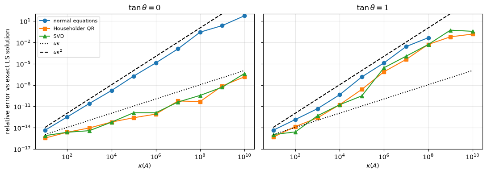
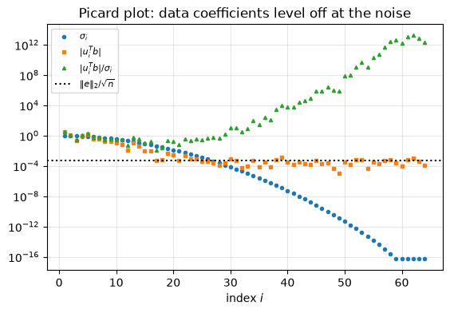
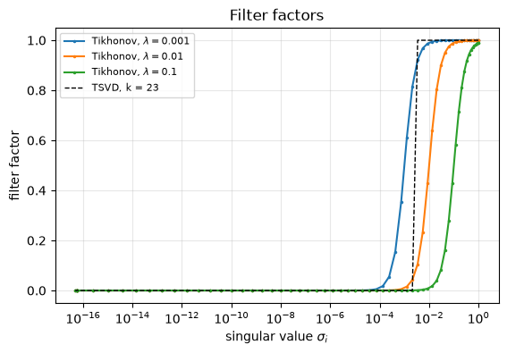
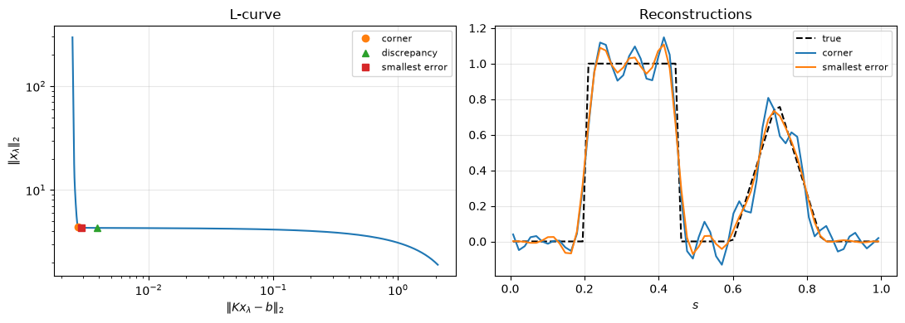

8.13. Lab 8: Linear least-squares problems#
This notebook accompanies Chapter 8 of the notes. Every experiment checks a statement from the chapter numerically.
Learning objectives. After working through this lab you should be able to
implement least squares by the normal equations with Cholesky, by Householder QR with \(Q^Tb\) applied implicitly, and by the (truncated) SVD, and verify them against
numpy.linalg.lstsqwith justified tolerances;measure the rounding error of an algorithm correctly, against the exact least-squares solution of the same data;
reproduce the dependence of the forward error on \(\kappa(A)\) and on the size of the residual, and verify the condition numbers of Theorem 8.3;
explain why modified Gram–Schmidt must process \(b\) as an extra column;
compute minimum-norm solutions of rank-deficient problems and make rank decisions;
regularize a discrete ill-posed problem with Tikhonov regularization and choose the parameter with the L-curve.
Run the cells in order from a fresh kernel.
import time
from fractions import Fraction
import matplotlib.pyplot as plt
import numpy as np
import scipy.linalg as sla
import scipy.sparse as sp
import scipy.sparse.linalg as spla
rng = np.random.default_rng(20260808)
u = np.finfo(float).eps / 2 # unit roundoff of IEEE double precision, 2**-53
plt.rcParams.update({"figure.figsize": (6.4, 4.0), "axes.grid": True, "grid.alpha": 0.3})
print(f"NumPy {np.__version__}, SciPy {__import__('scipy').__version__}; u = {u:.3e}")
NumPy 2.5.3, SciPy 1.18.1; u = 1.110e-16
8.13.1. 1. The worked example#
We start with Example 8.1: fitting a line to \((0,1)\), \((1,2)\), \((2,4)\). The exact solution is \(x = (5/6, 3/2)^T\) and the residual is \((1/6, -1/3, 1/6)^T\).
A = np.array([[1.0, 0.0], [1.0, 1.0], [1.0, 2.0]])
b = np.array([1.0, 2.0, 4.0])
x, res, rank, sv = np.linalg.lstsq(A, b, rcond=None)
r = b - A @ x
print("x =", x, " r =", r, " A^T r =", A.T @ r)
print(f"||r||_2 = {np.linalg.norm(r):.6f} (1/sqrt(6) = {1 / np.sqrt(6):.6f})")
# kappa(A) is about 3, so the computed x is correct to a small multiple of u.
assert np.allclose(x, [5 / 6, 3 / 2], rtol=0, atol=10 * u)
assert np.allclose(r, [1 / 6, -1 / 3, 1 / 6], rtol=0, atol=10 * u)
x = [0.83333333 1.5 ] r = [ 0.16666667 -0.33333333 0.16666667] A^T r = [6.66133815e-16 8.88178420e-16]
||r||_2 = 0.408248 (1/sqrt(6) = 0.408248)
8.13.2. 2. Three solvers, implemented correctly#
The legacy code for this course had docstrings that did not match the code:
a function documented as “normal equations via Cholesky” called
np.linalg.solve (an LU factorization), and a “minimum-norm” SVD solver
divided by all singular values, including zero ones. Here are correct
versions.
ls_normalforms \(A^TA\) and \(A^Tb\) and uses a Cholesky factorization (Algorithm 8.1). It raisesLinAlgErrorif the computed \(A^TA\) is not positive definite.ls_householderimplements Algorithm 8.2: each reflector is applied to the remaining columns and to \(b\), so \(Q\) is never formed.ls_svdimplements Algorithm 8.3 with a relative tolerance: it returns the minimum-norm solution of the problem with the singular values belowrtol * sigma_1set to zero.
def ls_normal(A, b):
"""Least squares by the normal equations A^T A x = A^T b, solved by Cholesky."""
C = A.T @ A
L = np.linalg.cholesky(C) # C = L L^T; LinAlgError if not SPD
z = sla.solve_triangular(L, A.T @ b, lower=True)
return sla.solve_triangular(L.T, z, lower=False)
def ls_householder(A, b):
"""Least squares by Householder QR; Q^T b is accumulated reflector by reflector."""
R = np.array(A, dtype=float)
c = np.array(b, dtype=float)
m, n = R.shape
for k in range(n):
x = R[k:, k]
s = 1.0 if x[0] >= 0 else -1.0 # sign choice avoids cancellation (Chapter 1)
v = x.copy()
v[0] += s * np.linalg.norm(x)
v /= np.linalg.norm(v) # H = I - 2 v v^T with ||v|| = 1
R[k:, k:] -= 2.0 * np.outer(v, v @ R[k:, k:])
c[k:] -= 2.0 * v * (v @ c[k:])
return sla.solve_triangular(np.triu(R[:n]), c[:n], lower=False)
def ls_svd(A, b, rtol=None):
"""Minimum-norm least-squares solution with singular values <= rtol*sigma_1 treated as zero.
The default rtol = max(m, n) * eps is the default of numpy.linalg.lstsq.
"""
U, s, Vt = np.linalg.svd(A, full_matrices=False)
if rtol is None:
rtol = max(A.shape) * np.finfo(float).eps
k = int(np.sum(s > rtol * s[0])) if s.size and s[0] > 0 else 0
return Vt[:k].T @ ((U[:, :k].T @ b) / s[:k])
Verification. For a random, well-conditioned problem all three solvers
must agree with numpy.linalg.lstsq. How close? By
(8.11), a backward stable method has a relative error of
order \(u(\kappa + \kappa^2\tan\theta/\eta)\) up to modest dimension-dependent
factors, and the normal equations of order \(u\kappa^2\). We allow a factor
\(10\,n\) on top of these, and compute \(\kappa\), \(\theta\) and \(\eta\) from the
problem itself.
def kappa_theta_eta(A, b):
x = np.linalg.lstsq(A, b, rcond=None)[0]
y = A @ x
kappa = np.linalg.cond(A)
theta = np.arccos(min(1.0, np.linalg.norm(y) / np.linalg.norm(b)))
eta = np.linalg.norm(A, 2) * np.linalg.norm(x) / np.linalg.norm(y)
return kappa, theta, eta
m, n = 100, 12
A = rng.standard_normal((m, n))
b = rng.standard_normal(m)
kappa, theta, eta = kappa_theta_eta(A, b)
x_ref = np.linalg.lstsq(A, b, rcond=None)[0]
print(f"kappa = {kappa:.2f}, theta = {np.degrees(theta):.1f} degrees, eta = {eta:.2f}")
tol_stable = 10 * n * u * (kappa + kappa**2 * np.tan(theta) / eta + kappa / (eta * np.cos(theta)))
tol_normal = 10 * n * u * kappa**2 * (1 + 1 / (eta * np.cos(theta)))
for f, tol in ((ls_normal, tol_normal), (ls_householder, tol_stable), (ls_svd, tol_stable)):
err = np.linalg.norm(f(A, b) - x_ref) / np.linalg.norm(x_ref)
print(f"{f.__name__:15s} relative difference from lstsq {err:.1e} (tolerance {tol:.1e})")
assert err < tol
kappa = 1.77, theta = 65.6 degrees, eta = 1.32
ls_normal relative difference from lstsq 7.1e-16 (tolerance 1.2e-13)
ls_householder relative difference from lstsq 7.5e-16 (tolerance 1.4e-13)
ls_svd relative difference from lstsq 9.5e-16 (tolerance 1.4e-13)
8.13.3. 3. Measuring rounding errors correctly#
To see the rounding errors of an algorithm we need the exact least-squares
solution of the data that the algorithm actually receives, which are
floating-point numbers. Every double is a rational number, so we can form and
solve the normal equations in exact rational arithmetic with Python’s
fractions module and round only the final result. For \(n\le10\) this takes a
few milliseconds.
def exact_lstsq(A, b):
"""Exact least-squares solution of the stored binary64 data, rounded to double at the end."""
m, n = A.shape
F = [[Fraction(v) for v in row] for row in A.tolist()]
fb = [Fraction(v) for v in b.tolist()]
M = [[sum(F[k][i] * F[k][j] for k in range(m)) for j in range(n)] for i in range(n)]
c = [sum(F[k][i] * fb[k] for k in range(m)) for i in range(n)]
for j in range(n): # Gaussian elimination: exact, no pivoting needed
for i in range(j + 1, n):
lij = M[i][j] / M[j][j]
for k in range(j, n):
M[i][k] -= lij * M[j][k]
c[i] -= lij * c[j]
x = [Fraction(0)] * n
for i in reversed(range(n)):
x[i] = (c[i] - sum(M[i][k] * x[k] for k in range(i + 1, n))) / M[i][i]
return np.array([float(v) for v in x])
x_exact = exact_lstsq(A, b)
print(f"lstsq vs exact: {np.linalg.norm(x_ref - x_exact) / np.linalg.norm(x_exact):.1e}")
lstsq vs exact: 6.9e-16
The legacy comparison, redone. The legacy notebook compared the normal equations with QR for \(m = 40\), \(n = 8\), \(\kappa = 10^7\), with data \(b = Ax_{\rm gen} + e\) and noise \(e\) of size \(10^{-8}\), and it measured both errors against \(x_{\rm gen}\). It reported no significant difference. We build a matrix with singular values \(1,\dots,10^{-7}\) as \(A = U\Sigma V^T\) with random orthonormal factors and repeat the experiment with our own random data.
def matrix_with_singular_values(m, sigma, rng):
"""A = U diag(sigma) V^T with random U (m x n, orthonormal columns) and random orthogonal V."""
n = len(sigma)
U, _ = np.linalg.qr(rng.standard_normal((m, n)))
V, _ = np.linalg.qr(rng.standard_normal((n, n)))
return (U * sigma) @ V.T
m, n = 40, 8
A = matrix_with_singular_values(m, np.logspace(0, -7, n), rng)
x_gen = rng.standard_normal(n)
b = A @ x_gen + 1e-8 * rng.standard_normal(m)
x_ls = exact_lstsq(A, b)
print(f"kappa(A) = {np.linalg.cond(A):.2e}")
print(f"exact LS solution vs x_gen: {np.linalg.norm(x_ls - x_gen) / np.linalg.norm(x_gen):.1e} (statistical error A^+ e)")
legacy = {}
for f in (ls_normal, ls_householder):
xh = f(A, b)
legacy[f.__name__] = (np.linalg.norm(xh - x_gen) / np.linalg.norm(x_gen), np.linalg.norm(xh - x_ls) / np.linalg.norm(x_ls))
print(f"{f.__name__:15s} error vs x_gen {legacy[f.__name__][0]:.1e} error vs exact LS solution {legacy[f.__name__][1]:.1e}")
kappa(A) = 1.00e+07
exact LS solution vs x_gen: 1.8e-02 (statistical error A^+ e)
ls_normal error vs x_gen 2.9e-02 error vs exact LS solution 1.2e-02
ls_householder error vs x_gen 1.8e-02 error vs exact LS solution 1.2e-10
Measured against \(x_{\rm gen}\), both methods have an error of about \(10^{-2}\), because the least-squares solution itself differs from \(x_{\rm gen}\) by \(A^+e\), whose largest term \((u_n^Te/\sigma_n)\,v_n\) has a norm of order \(10^{-8}/10^{-7} = 10^{-1}\). That statistical error has nothing to do with the algorithm. Measured against the exact least-squares solution of the same data, the normal equations have a relative error of order \(10^{-2}\) and Householder QR of order \(10^{-10}\), consistent with \(u\kappa^2\approx10^{-2}\) and \(u\kappa\approx10^{-9}\). (With other random data the error of the normal equations varies between about \(10^{-4}\) and \(10^{-2}\); the notes quote one such run.)
8.13.4. 4. Forward error versus \(\kappa\) and the size of the residual#
We now reproduce Figure 8.2. For each \(\kappa\) we build \(A\) with singular values logarithmically spaced between \(1\) and \(1/\kappa\), and \(b = Ax + t\,\|Ax\|_2\,q\) with \(q\) a unit vector orthogonal to \(\operatorname{range}(A)\), so that \(\tan\theta = t\).
def make_problem(m, n, kappa, tan_theta, rng):
Q, _ = np.linalg.qr(rng.standard_normal((m, n + 1)))
V, _ = np.linalg.qr(rng.standard_normal((n, n)))
A = (Q[:, :n] * np.logspace(0, -np.log10(kappa), n)) @ V.T
y = A @ rng.standard_normal(n)
return A, y + tan_theta * np.linalg.norm(y) * Q[:, n]
def rel_error(f, A, b, x):
try:
return np.linalg.norm(f(A, b) - x) / np.linalg.norm(x)
except np.linalg.LinAlgError:
return np.nan # Cholesky of fl(A^T A) broke down
kappas = 10.0 ** np.arange(1, 10.1, 1)
solvers = {"normal equations": ls_normal, "Householder QR": ls_householder, "SVD": ls_svd}
errors = {}
for tan_theta in (0.0, 1.0):
errors[tan_theta] = {name: [] for name in solvers}
for kappa in kappas:
A, b = make_problem(40, 8, kappa, tan_theta, rng)
x = exact_lstsq(A, b)
for name, f in solvers.items():
errors[tan_theta][name].append(rel_error(f, A, b, x))
fig, axes = plt.subplots(1, 2, figsize=(11, 4), sharey=True)
for ax, tan_theta in zip(axes, (0.0, 1.0)):
for (name, errs), mk in zip(errors[tan_theta].items(), "os^"):
ax.loglog(kappas, np.maximum(errs, 1e-17), marker=mk, label=name)
ax.loglog(kappas, u * kappas, "k:", label=r"$u\kappa$")
ax.loglog(kappas, u * kappas**2, "k--", label=r"$u\kappa^2$")
ax.set_ylim(1e-17, 1e2)
ax.set_xlabel(r"$\kappa(A)$")
ax.set_title(rf"$\tan\theta = {tan_theta:g}$")
axes[0].set_ylabel("relative error vs exact LS solution")
axes[0].legend(fontsize=8)
plt.tight_layout()
plt.show()
# Checks, with generous factors (40 x 8 problems; one random sample per kappa):
e0 = errors[0.0]
for i, kappa in enumerate(kappas):
assert e0["Householder QR"][i] < 1e3 * kappa * u # backward stable: O(kappa u) for zero residual
assert e0["SVD"][i] < 1e3 * kappa * u
if not np.isnan(e0["normal equations"][i]):
assert e0["normal equations"][i] < 1e3 * kappa**2 * u # O(kappa^2 u) whatever the residual
i6 = list(kappas).index(1e6)
print(f"kappa = 1e6, zero residual: NE {e0['normal equations'][i6]:.1e}, QR {e0['Householder QR'][i6]:.1e}")
print(f"kappa = 1e6, tan(theta) = 1: NE {errors[1.0]['normal equations'][i6]:.1e}, "
f"QR {errors[1.0]['Householder QR'][i6]:.1e}")

kappa = 1e6, zero residual: NE 1.3e-05, QR 8.2e-13
kappa = 1e6, tan(theta) = 1: NE 1.3e-05, QR 7.4e-07
Interpretation. For a zero residual (left), QR and the SVD track \(u\kappa\) and the normal equations track \(u\kappa^2\); beyond \(\kappa\approx10^8\) the Cholesky factorization of the computed \(A^TA\) can fail (missing points). For a large residual (right), the errors of all three methods grow like \(u\kappa^2\): the factor \(\kappa^2\tan\theta/\eta\) in the condition number is a property of the problem, and no algorithm can avoid it. The normal equations are then as accurate as QR.
8.13.5. 5. Verifying the condition numbers#
Theorem 8.3 says that \(\kappa_b = \kappa/(\eta\cos\theta)\) exactly, and that \(\kappa_A\) lies between \(\max\{\kappa, \kappa^2\tan\theta/\eta\}\) and their sum. Its proof constructs the perturbations that attain each term. We apply them with a small relative size \(\epsilon\) and measure the amplification \((\|\delta x\|_2/\|x\|_2)/\epsilon\). We also try random perturbations, which typically amplify much less.
m, n = 30, 6
A, b = make_problem(m, n, 1e3, 0.5, rng)
U, s, Vt = np.linalg.svd(A, full_matrices=False)
x = np.linalg.lstsq(A, b, rcond=None)[0]
r = b - A @ x
kappa, theta, eta = kappa_theta_eta(A, b)
nA, nx, nb = s[0], np.linalg.norm(x), np.linalg.norm(b)
print(f"kappa = {kappa:.1f}, tan(theta) = {np.tan(theta):.3f}, eta = {eta:.2f}")
print(f"kappa_b = kappa/(eta cos theta) = {kappa / (eta * np.cos(theta)):.1f}")
print(f"kappa^2 tan(theta)/eta = {kappa**2 * np.tan(theta) / eta:.1f}")
eps = 1e-9
def amplification(dA, db):
xp = np.linalg.lstsq(A + dA, b + db, rcond=None)[0]
rel_data = max(np.linalg.norm(dA, 2) / nA, np.linalg.norm(db) / nb)
return (np.linalg.norm(xp - x) / nx) / rel_data
tests = {
"db = eps ||b|| u_n": (np.zeros_like(A), eps * nb * U[:, -1]),
"dA = eps ||A|| u_n x^T/||x||": (eps * nA * np.outer(U[:, -1], x) / nx, np.zeros(m)),
"dA = eps ||A|| r v_n^T/||r||": (eps * nA * np.outer(r, Vt[-1]) / np.linalg.norm(r), np.zeros(m)),
}
predicted = [kappa / (eta * np.cos(theta)), kappa, kappa**2 * np.tan(theta) / eta]
for (name, (dA, db)), pred in zip(tests.items(), predicted):
amp = amplification(dA, db)
print(f"{name:32s} amplification {amp:10.1f} predicted {pred:10.1f}")
# First-order theory; second-order terms are O(eps kappa^2) ~ 1e-3 relative, rounding O(kappa u / eps).
assert abs(amp / pred - 1) < 1e-2
rand_amp = []
for _ in range(200):
dA = rng.standard_normal((m, n))
dA *= eps * nA / np.linalg.norm(dA, 2)
rand_amp.append(amplification(dA, np.zeros(m)))
bound = kappa + kappa**2 * np.tan(theta) / eta
print(f"random dA: median amplification {np.median(rand_amp):.1f}, max {max(rand_amp):.1f}, bound {bound:.1f}")
assert max(rand_amp) <= bound * (1 + 1e-2)
kappa = 1000.0, tan(theta) = 0.500, eta = 2.24
kappa_b = kappa/(eta cos theta) = 499.8
kappa^2 tan(theta)/eta = 223508.9
db = eps ||b|| u_n amplification 499.8 predicted 499.8
dA = eps ||A|| u_n x^T/||x|| amplification 1000.0 predicted 1000.0
dA = eps ||A|| r v_n^T/||r|| amplification 223508.9 predicted 223508.9
random dA: median amplification 20772.8, max 92719.7, bound 224508.9
The special perturbations attain the predicted amplifications to about three digits; random perturbations stay below the bound, typically well below it. Note that we perturbed the data here and solved each perturbed problem with the same backward stable method: these numbers describe the problem, and any other accurate method would give the same.
8.13.6. 6. Modified Gram–Schmidt: the right-hand side matters#
MGS loses orthogonality in proportion to \(\kappa u\) (Chapter 7). We compare two ways of using it for least squares: forming \(\hat Q^Tb\) with the computed \(\hat Q\), and running MGS on the augmented matrix \([A,\ b]\) (Section 8.4).
def mgs(A):
"""Modified Gram-Schmidt: A = Q R with Q (m x n) and R (n x n) upper triangular."""
Q = np.array(A, dtype=float)
m, n = Q.shape
R = np.zeros((n, n))
for k in range(n):
R[k, k] = np.linalg.norm(Q[:, k])
Q[:, k] /= R[k, k]
R[k, k + 1:] = Q[:, k] @ Q[:, k + 1:]
Q[:, k + 1:] -= np.outer(Q[:, k], R[k, k + 1:])
return Q, R
def ls_mgs_explicit(A, b):
"""Unsafe: uses the computed Q, which may be far from orthogonal."""
Q, R = mgs(A)
return sla.solve_triangular(R, Q.T @ b)
def ls_mgs_augmented(A, b):
"""Backward stable: MGS on [A, b]; the last column of R is z, and R_1 x = z."""
n = A.shape[1]
_, R = mgs(np.column_stack([A, b]))
return sla.solve_triangular(R[:n, :n], R[:n, n])
print(" kappa ||Q^TQ-I|| MGS explicit MGS augmented Householder")
mgs_rows = []
for kappa in (1e2, 1e4, 1e6, 1e8, 1e10):
A, b = make_problem(40, 8, kappa, 0.0, rng)
x = exact_lstsq(A, b)
Q, _ = mgs(A)
row = [np.linalg.norm(Q.T @ Q - np.eye(8), 2)] + [rel_error(f, A, b, x) for f in
(ls_mgs_explicit, ls_mgs_augmented, ls_householder)]
mgs_rows.append(row)
print(f"{kappa:6.0e} {row[0]:9.1e} {row[1]:11.1e} {row[2]:12.1e} {row[3]:10.1e}")
assert row[2] < 1e3 * kappa * u # augmented MGS: O(kappa u), like Householder
kappa ||Q^TQ-I|| MGS explicit MGS augmented Householder
1e+02 4.0e-15 5.4e-14 1.1e-15 1.6e-15
1e+04 2.8e-13 6.4e-10 3.3e-14 6.0e-14
1e+06 6.5e-11 3.8e-05 1.9e-12 5.3e-12
1e+08 3.7e-09 1.4e-01 2.7e-10 9.2e-10
1e+10 7.5e-07 3.4e+03 2.1e-08 4.5e-09
The explicit variant loses accuracy like the normal equations, in proportion to \(\kappa^2u\), while MGS on \([A,\ b]\) is as accurate as Householder QR, even when \(\hat Q\) is far from orthogonal. The least-squares solution does not need an orthogonal \(\hat Q\); it needs the right-hand side to be transformed by the same sequence of operations as the columns of \(A\).
What about numpy.linalg.qr, which forms the Householder \(Q\) explicitly?
Its \(Q\) is orthogonal to working accuracy, so \(x = R^{-1}(Q^Tb)\) is fine.
def ls_numpy_qr(A, b):
Q, R = np.linalg.qr(A)
return sla.solve_triangular(R, Q.T @ b)
for kappa in (1e4, 1e8):
A, b = make_problem(40, 8, kappa, 0.0, rng)
x = exact_lstsq(A, b)
e_np, e_hh = rel_error(ls_numpy_qr, A, b, x), rel_error(ls_householder, A, b, x)
print(f"kappa = {kappa:.0e}: numpy.linalg.qr {e_np:.1e}, implicit Householder {e_hh:.1e}")
assert e_np < 1e3 * kappa * u
kappa = 1e+04: numpy.linalg.qr 9.6e-14, implicit Householder 4.8e-14
kappa = 1e+08: numpy.linalg.qr 2.4e-10, implicit Householder 1.1e-10
8.13.7. 7. The Läuchli matrix: when the normal equations lose everything#
For \(A = \begin{bmatrix}1&1\\\epsilon&0\\0&\epsilon\end{bmatrix}\) with \(\epsilon = 10^{-8}\), the exact \(A^TA\) has diagonal entries \(1+\epsilon^2\), but \(\epsilon^2 = 10^{-16}<u\), so the computed \(A^TA\) is exactly the singular matrix of all ones (Exercise 8.5).
eps_l = 1e-8
A = np.array([[1.0, 1.0], [eps_l, 0.0], [0.0, eps_l]])
b = np.array([2.0, eps_l, eps_l]) # b = A (1, 1)^T: zero residual
print("fl(A^T A) =\n", A.T @ A)
print(f"kappa(A) = {np.linalg.cond(A):.3e}")
try:
ls_normal(A, b)
print("Cholesky succeeded")
except np.linalg.LinAlgError as err:
print("normal equations: Cholesky failed:", err)
x_qr = ls_householder(A, b)
err_qr = np.linalg.norm(x_qr - 1) / np.sqrt(2)
print(f"Householder QR: x = {x_qr}, relative error {err_qr:.1e}")
assert err_qr < 100 * np.linalg.cond(A) * u # O(kappa u) for a consistent problem
fl(A^T A) =
[[1. 1.]
[1. 1.]]
kappa(A) = 1.414e+08
normal equations: Cholesky failed: Matrix is not positive definite
Householder QR: x = [1. 1.], relative error 0.0e+00
8.13.8. 8. Cost: flops and one machine’s timings#
The normal equations cost about \(mn^2 + n^3/3\) flops and Householder QR about
\(2mn^2 - 2n^3/3\) (Section 8.2). We time LAPACK-based versions
(scipy.linalg.cho_factor on \(A^TA\), scipy.linalg.qr in "economic" mode
with a triangular solve, and numpy.linalg.lstsq), taking the median of
several repeats. The absolute numbers are observations on the machine that
executed this notebook.
def median_time(f, *args, repeats=7):
f(*args)
times = []
for _ in range(repeats):
t0 = time.perf_counter()
f(*args)
times.append(time.perf_counter() - t0)
return float(np.median(times))
def ne_lapack(A, b):
return sla.cho_solve(sla.cho_factor(A.T @ A), A.T @ b)
def qr_lapack(A, b):
Q, R = sla.qr(A, mode="economic")
return sla.solve_triangular(R, Q.T @ b)
m, n = 4000, 200
A = rng.standard_normal((m, n))
b = rng.standard_normal(m)
for name, f in (("normal equations", ne_lapack), ("QR (economic)", qr_lapack),
("lstsq (SVD-based)", lambda A, b: np.linalg.lstsq(A, b, rcond=None)[0])):
print(f"{name:18s} {1e3 * median_time(f, A, b):7.1f} ms")
print(f"flop ratio QR / normal equations predicted by the leading terms: "
f"{(2 * m * n**2 - 2 * n**3 / 3) / (m * n**2 + n**3 / 3):.2f}")
normal equations 2.4 ms
QR (economic) 51.2 ms
lstsq (SVD-based) 30.9 ms
flop ratio QR / normal equations predicted by the leading terms: 1.93
The measured ratios need not match the flop ratio: forming \(A^TA\) is a single level-3 BLAS operation that runs very fast, while the QR factorization and especially the formation of the explicit \(Q\) are organized differently (Chapter 1).
8.13.9. 9. Rank-deficient problems and the minimum-norm solution#
The legacy “minimum-norm” SVD solver divided by every singular value. For a matrix of exact rank \(3\), the computed singular values \(\sigma_4,\dots\) are of order \(u\sigma_1\) rather than zero, and dividing by them produces an enormous vector.
def ls_svd_legacy(A, b):
"""The legacy code: no truncation (do not use)."""
U, s, Vt = np.linalg.svd(A, full_matrices=False)
return Vt.T @ ((U.T @ b) / s)
m, n, k = 20, 6, 3
A = rng.standard_normal((m, k)) @ rng.standard_normal((k, n)) # rank 3
b = rng.standard_normal(m)
s = np.linalg.svd(A, compute_uv=False)
print("singular values:", np.array2string(s, precision=2))
x_leg = ls_svd_legacy(A, b)
x_min = ls_svd(A, b)
x_np = np.linalg.lstsq(A, b, rcond=None)[0]
x_pinv = np.linalg.pinv(A) @ b
print(f"||x|| legacy (no truncation) = {np.linalg.norm(x_leg):.2e}")
print(f"||x|| truncated SVD = {np.linalg.norm(x_min):.4f}")
print(f"residuals: legacy {np.linalg.norm(b - A @ x_leg):.4f}, truncated {np.linalg.norm(b - A @ x_min):.4f}")
# The truncated solution is the minimum-norm solution: it agrees with lstsq and pinv to
# O(kappa_k u), kappa_k = sigma_1/sigma_3, and it lies in range(A^T) (orthogonal to null(A)).
kappa_k = s[0] / s[k - 1]
assert np.linalg.norm(x_min - x_np) < 100 * kappa_k * u * np.linalg.norm(x_min)
assert np.linalg.norm(x_min - x_pinv) < 100 * kappa_k * u * np.linalg.norm(x_min)
Vt = np.linalg.svd(A)[2]
print(f"component of x_min in null(A): {np.linalg.norm(Vt[k:] @ x_min):.1e}")
singular values: [1.80e+01 1.02e+01 8.65e+00 2.08e-15 1.11e-15 4.71e-16]
||x|| legacy (no truncation) = 3.65e+15
||x|| truncated SVD = 0.0777
residuals: legacy 5.8287, truncated 2.9244
component of x_min in null(A): 2.5e-17
The legacy solution has a huge norm and even a larger residual than the
truncated one: it is dominated by rounding noise divided by
\(\sigma_4,\dots,\sigma_6\approx10^{-16}\). With an exactly zero singular value
it would contain inf or nan.
Basic versus minimum-norm solutions. QR with column pivoting
(scipy.linalg.qr(A, pivoting=True)) reveals the rank through the diagonal of
\(R\), and gives a basic solution with only \(k\) nonzero entries. It solves
the least-squares problem equally well but is not the minimum-norm solution.
scipy.linalg.lstsq with the driver gelsy uses a complete orthogonal
factorization and returns the minimum-norm solution.
Q, R, perm = sla.qr(A, pivoting=True, mode="economic")
print("|diag(R)| =", np.array2string(np.abs(np.diag(R)), precision=2))
k_qr = int(np.sum(np.abs(np.diag(R)) > max(A.shape) * np.finfo(float).eps * abs(R[0, 0])))
c = Q.T @ b
x_basic = np.zeros(n)
x_basic[perm[:k_qr]] = sla.solve_triangular(R[:k_qr, :k_qr], c[:k_qr])
x_gelsy = sla.lstsq(A, b, lapack_driver="gelsy")[0]
print(f"numerical rank from pivoted QR: {k_qr}")
print(f"basic solution: ||x|| = {np.linalg.norm(x_basic):.4f}, residual {np.linalg.norm(b - A @ x_basic):.6f}, "
f"nonzeros {np.count_nonzero(x_basic)}")
print(f"gelsy (min-norm): ||x|| = {np.linalg.norm(x_gelsy):.4f}, residual {np.linalg.norm(b - A @ x_gelsy):.6f}")
assert k_qr == k
assert np.linalg.norm(x_gelsy - x_min) < 100 * kappa_k * u * np.linalg.norm(x_min)
assert np.linalg.norm(x_basic) >= np.linalg.norm(x_min) * (1 - 1e-12)
|diag(R)| = [1.27e+01 6.52e+00 5.27e+00 4.26e-15 9.32e-16 7.09e-16]
numerical rank from pivoted QR: 3
basic solution: ||x|| = 0.1449, residual 2.924378, nonzeros 3
gelsy (min-norm): ||x|| = 0.0777, residual 2.924378
Rank decisions with noisy data. Now perturb the rank-3 matrix by noise
of size \(10^{-6}\). The matrix has full rank in exact arithmetic, but three of
its singular values are at the noise level. numpy.linalg.lstsq with the
default cutoff treats the problem as full rank, and the solution is
dominated by the noise directions; a cutoff chosen from the noise level
recovers a stable solution (Exercise 8.12).
A_noisy = A + 1e-6 * rng.standard_normal(A.shape)
s_noisy = np.linalg.svd(A_noisy, compute_uv=False)
print("singular values:", np.array2string(s_noisy, precision=2))
for rcond in (None, 1e-4):
x_r, _, rank_r, _ = np.linalg.lstsq(A_noisy, b, rcond=rcond)
print(f"rcond = {rcond}: rank {rank_r}, ||x|| = {np.linalg.norm(x_r):.3e}, "
f"||x - x_min|| / ||x_min|| = {np.linalg.norm(x_r - x_min) / np.linalg.norm(x_min):.1e}")
singular values: [1.80e+01 1.02e+01 8.65e+00 4.32e-06 4.05e-06 2.36e-06]
rcond = None: rank 6, ||x|| = 4.048e+05, ||x - x_min|| / ||x_min|| = 5.2e+06
rcond = 0.0001: rank 3, ||x|| = 7.770e-02, ||x - x_min|| / ||x_min|| = 4.5e-07
The perturbation of size about \(10^{-6}\) changes the default solution by a relative amount of order \(10^6\), as Proposition 8.1 predicts, while the truncated solution changes only by an amount of the order of the noise.
8.13.10. 10. Tikhonov regularization of a discrete ill-posed problem#
We discretize the blurring operator \((Kx)(s) = \int_0^1 k(s,t)x(t)\,dt\) with a Gaussian kernel \(k(s,t) = \exp(-(s-t)^2/(2w^2))/(w\sqrt{2\pi})\), \(w = 0.05\), by the midpoint rule with \(n = 64\) points, choose a true solution with a box and a triangle, and add Gaussian noise of relative size \(10^{-3}\). This is the problem of Figure 8.3.
def fredholm_problem(n=64, width=0.05, noise=1e-3, seed=2026):
g = np.random.default_rng(seed)
s = (np.arange(n) + 0.5) / n
K = np.exp(-((s[:, None] - s[None, :]) ** 2) / (2 * width**2)) / (width * np.sqrt(2 * np.pi) * n)
x_true = ((s > 0.2) & (s < 0.45)).astype(float) + 0.8 * np.maximum(0.0, 1 - np.abs(s - 0.72) / 0.12)
b_exact = K @ x_true
e = g.standard_normal(n)
e *= noise * np.linalg.norm(b_exact) / np.linalg.norm(e)
return s, K, x_true, b_exact + e, e
s_grid, K, x_true, b, e = fredholm_problem()
U, sig, Vt = np.linalg.svd(K)
beta = U.T @ b
relerr = lambda x: np.linalg.norm(x - x_true) / np.linalg.norm(x_true)
print(f"sigma_1 = {sig[0]:.3f}, sigma_n = {sig[-1]:.1e}, computed kappa(K) = {np.linalg.cond(K):.1e}")
print(f"relative error of the naive solution K^(-1) b: {relerr(np.linalg.solve(K, b)):.1e}")
fig, ax = plt.subplots()
ax.semilogy(np.arange(1, 65), sig, "o", ms=3, label=r"$\sigma_i$")
ax.semilogy(np.arange(1, 65), np.abs(beta), "s", ms=3, label=r"$|u_i^Tb|$")
ax.semilogy(np.arange(1, 65), np.abs(beta) / sig, "^", ms=3, label=r"$|u_i^Tb|/\sigma_i$")
ax.axhline(np.linalg.norm(e) / 8, color="k", ls=":", label=r"$\|e\|_2/\sqrt{n}$")
ax.set_xlabel("index $i$")
ax.set_title("Picard plot: data coefficients level off at the noise")
ax.legend(fontsize=8)
plt.show()
sigma_1 = 0.989, sigma_n = 4.8e-17, computed kappa(K) = 8.1e+17
relative error of the naive solution K^(-1) b: 5.2e+13

The coefficients \(|u_i^Tb|\) decay with \(\sigma_i\) until they reach the noise level, after which they stay roughly constant while \(\sigma_i\) keeps decreasing; the quotients \(|u_i^Tb|/\sigma_i\), which are the coefficients of the naive solution, grow enormously.
Truncated SVD and Tikhonov. Both are filters applied to the terms of (8.13): the truncated SVD uses factors \(1\) and \(0\), Tikhonov uses \(f_i = \sigma_i^2/(\sigma_i^2+\lambda^2)\).
def tikhonov_svd(lam):
f = sig**2 / (sig**2 + lam**2)
return Vt.T @ (f * beta / sig)
def tikhonov_augmented(lam):
"""Stable computation: ordinary least squares with the stacked matrix [K; lam I]."""
n = K.shape[1]
return ls_householder(np.vstack([K, lam * np.eye(n)]), np.concatenate([b, np.zeros(n)]))
tsvd_err = [relerr(Vt[:k].T @ (beta[:k] / sig[:k])) for k in range(1, 65)]
k_best = int(np.argmin(tsvd_err)) + 1
print(f"TSVD: best k = {k_best}, relative error {min(tsvd_err):.3f}")
lam = 1e-3
x_a, x_s = tikhonov_augmented(lam), tikhonov_svd(lam)
kappa_aug = np.sqrt((sig[0]**2 + lam**2) / (sig[-1]**2 + lam**2))
print(f"lambda = {lam}: kappa([K; lam I]) = {kappa_aug:.1e}, "
f"augmented QR vs SVD formula: {np.linalg.norm(x_a - x_s) / np.linalg.norm(x_s):.1e}")
# Both are backward stable computations of a problem with condition number about kappa_aug.
assert np.linalg.norm(x_a - x_s) < 100 * kappa_aug * u * np.linalg.norm(x_s) * 64
fig, ax = plt.subplots()
for lam_f in (1e-3, 1e-2, 1e-1):
ax.semilogx(sig, sig**2 / (sig**2 + lam_f**2), ".-", ms=3, label=rf"Tikhonov, $\lambda = {lam_f:g}$")
ax.semilogx(sig, (np.arange(64) < k_best).astype(float), "k--", lw=1, label=f"TSVD, k = {k_best}")
ax.set_xlabel(r"singular value $\sigma_i$")
ax.set_ylabel("filter factor")
ax.set_title("Filter factors")
ax.legend(fontsize=8)
plt.show()
TSVD: best k = 23, relative error 0.162
lambda = 0.001: kappa([K; lam I]) = 9.9e+02, augmented QR vs SVD formula: 2.6e-13

Choosing \(\lambda\): the L-curve and the discrepancy principle. We scan \(\lambda\) over \([10^{-6}, 1]\) and record the residual norm, the solution norm and (because here we know it) the error. The corner of the L-curve is located as the point of maximum curvature of \((\log\|Kx_\lambda - b\|_2, \log\|x_\lambda\|_2)\) as a function of \(\log\lambda\).
lams = np.logspace(-6, 0, 241)
X = [tikhonov_svd(lam) for lam in lams]
rho = np.array([np.linalg.norm(K @ x - b) for x in X])
nrm = np.array([np.linalg.norm(x) for x in X])
err = np.array([relerr(x) for x in X])
tl, lr, ln_ = np.log(lams), np.log(rho), np.log(nrm)
d1r, d1e = np.gradient(lr, tl), np.gradient(ln_, tl)
d2r, d2e = np.gradient(d1r, tl), np.gradient(d1e, tl)
curvature = (d1r * d2e - d2r * d1e) / (d1r**2 + d1e**2) ** 1.5
i_corner, i_best = int(np.argmax(curvature)), int(np.argmin(err))
i_disc = int(np.argmin(np.abs(rho - np.linalg.norm(e))))
for name, i in (("L-curve corner", i_corner), ("discrepancy principle", i_disc), ("smallest error", i_best)):
print(f"{name:22s} lambda = {lams[i]:.1e}, relative error {err[i]:.3f}")
fig, axes = plt.subplots(1, 2, figsize=(11, 4))
axes[0].loglog(rho, nrm)
for i, mk, name in ((i_corner, "o", "corner"), (i_disc, "^", "discrepancy"), (i_best, "s", "smallest error")):
axes[0].loglog(rho[i], nrm[i], mk, label=name)
axes[0].set_xlabel(r"$\|Kx_\lambda - b\|_2$")
axes[0].set_ylabel(r"$\|x_\lambda\|_2$")
axes[0].set_title("L-curve")
axes[0].legend(fontsize=8)
axes[1].plot(s_grid, x_true, "k--", label="true")
axes[1].plot(s_grid, X[i_corner], label="corner")
axes[1].plot(s_grid, X[i_best], label="smallest error")
axes[1].set_xlabel("$s$")
axes[1].set_title("Reconstructions")
axes[1].legend(fontsize=8)
plt.tight_layout()
plt.show()
assert np.all(np.diff(rho) >= -1e-12 * rho[1:]) and np.all(np.diff(nrm) <= 1e-12 * nrm[1:]) # monotonicity
L-curve corner lambda = 6.7e-04, relative error 0.196
discrepancy principle lambda = 1.1e-02, relative error 0.179
smallest error lambda = 2.8e-03, relative error 0.160

Interpretation. The residual norm increases and the solution norm decreases monotonically in \(\lambda\) (Theorem 8.6). The corner of the L-curve and the discrepancy principle both give errors of roughly \(20\%\), not far from the best achievable value of about \(16\%\) on this grid; the naive solution is useless. The remaining error is due to the blurring, which has destroyed the information carried by the components with \(\sigma_i\) below the noise level; the sharp edges of the box cannot be recovered.
8.13.11. 11. A pointer to iterative methods: LSQR#
For a large sparse matrix, LSQR [Paige and Saunders, 1982] solves the least-squares
problem using only products with \(A\) and \(A^T\). It is a Krylov subspace
method; Krylov methods for linear systems are the subject of
Chapter 11.
Its damp argument adds Tikhonov regularization.
m, n = 3000, 300
A_sp = sp.random(m, n, density=0.01, random_state=1, format="csr") + sp.eye(m, n, format="csr")
b = rng.standard_normal(m)
out = spla.lsqr(A_sp, b, atol=1e-12, btol=1e-12, iter_lim=2000)
x_lsqr, istop, itn = out[0], out[1], out[2]
x_dir = ls_householder(A_sp.toarray(), b)
print(f"LSQR: {itn} iterations, relative difference from Householder QR "
f"{np.linalg.norm(x_lsqr - x_dir) / np.linalg.norm(x_dir):.1e}")
print(f"kappa(A) = {np.linalg.cond(A_sp.toarray()):.1f}")
LSQR: 28 iterations, relative difference from Householder QR 1.0e-11
kappa(A) = 3.2
8.13.12. Common mistakes#
Measuring the error of a least-squares method against the vector used to generate noisy data. Compare with the exact least-squares solution.
Claiming that the normal equations and QR “respond differently” to a perturbation of the data. The exact solution moves the same way; the methods differ in the rounding errors they add.
Computing \(\hat Q^Tb\) with a Gram–Schmidt \(\hat Q\). Process \(b\) as an extra column instead.
Dividing by every computed singular value. Truncate below a tolerance that reflects the accuracy of the data.
Calling a function “Cholesky” when it calls
np.linalg.solve(LU), or “minimum-norm” when it is not: docstrings are part of the code.Choosing a regularization parameter by eye on a linear plot; use the L-curve on log-log axes or the discrepancy principle.
8.13.13. Your turn#
Repeat the experiment of Section 4 with \(\tan\theta = 10^{-4}\). For which \(\kappa\) does the QR error change from the \(u\kappa\) to the \(u\kappa^2\) regime? Compare with (8.11).
In Section 5, choose \(x\) parallel to \(v_n\) and check that \(\kappa^2\tan\theta/\eta\) reduces to \(\kappa\tan\theta\) (Exercise 8.7).
Implement least squares with Givens rotations and check its accuracy against
ls_householder.Carry out Exercise 8.12 and Exercise 8.8.
Add \(5\%\) noise to the Fredholm problem and compare the parameter choices again.
8.13.14. Key takeaways#
Householder QR (with \(Q^Tb\) applied implicitly) and MGS on \([A,\ b]\) are backward stable; the normal equations have errors of order \(\kappa^2u\).
For small residuals this makes the normal equations much less accurate; for large residuals the problem itself has condition number of order \(\kappa^2\) and all methods are comparable.
The condition numbers of Theorem 8.3 are attained by explicit perturbations.
Rank-deficient problems need a rank decision; Tikhonov regularization with a well-chosen \(\lambda\) handles problems without a gap.
8.13.15. Further reading#
Trefethen and Bau [1997], Lectures 11, 18 and 19; Higham [2002], Chapter 20; Björck [1996]; Hansen [1998] for regularization and Hansen [1992] for the L-curve.